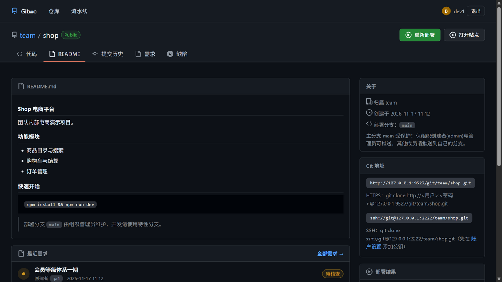
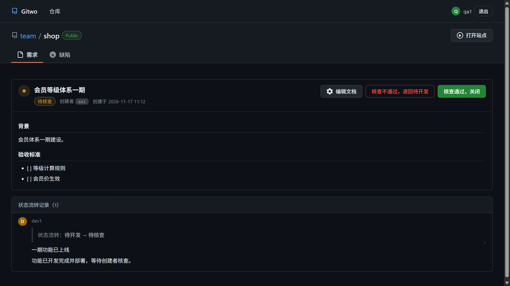

界面速览
从代码、部署到测试协作的完整闭环。以下截图来自真实运行实例。





Gitwo 是自包含的迷你 Git 服务端与 push-to-deploy 平台：Git 托管、Web 管理界面、用户/组织与角色权限、
缺陷与需求协作、推送自动构建部署、站点与 API 统一托管——不装 Docker、不装 Nginx、不用数据库，
一个端口（默认 9527）全搞定。
# 构建（任何有 Go 1.22+ 的机器）
go build -o gitwo .
# 启动：程序目录即数据目录
./gitwo serve
# → http://127.0.0.1:9527 默认账户 admin / admin从代码、部署到测试协作的完整闭环。以下截图来自真实运行实例。


一个平台覆盖「写代码 → 构建部署 → 测试验证 → 需求迭代」的团队工作流。
内置 git 智能 HTTP 协议与 SSH 服务（默认 :2222），clone / push 开箱即用；账户设置里登记多把 SSH 公钥即可推送。
推送触发构建队列：同仓库串行、跨仓库并行、相同 commit 去重；静态站点与 Go 服务（nohup + PID 校验）自动部署。
组织仓库的部署主分支仅组织创建者与管理员可推送；其他成员推送自己的分支，push 时直接报错提示。
组织成员共享全部仓库；管理员 / 开发者 / 测试三角色。测试只能打开已部署的站点与 API，看不到源码与流水线。
测试以统一 markdown 文档提交缺陷（复现步骤/预期/实际，可附截图），指派给开发；状态：待修复 → 待复测 → 已关闭。
仓库级迭代需求，浏览器在线编写 markdown；只有创建者可编辑；开发提交核查、创建者验收关闭，全程留痕。
前端 /sites/<仓库>/、后端 /api/<仓库>/ 反代到服务端口——后端口不再逐台暴露，防火墙只开一个端口。
任务详情与最近部署列表可「回到此版本」，把任意历史提交重新构建部署，出错一键回退。
配置 notify_webhook 后，每次部署结束（成功/失败）POST JSON 摘要到你的 IM / CI 网关。
数据目录 = 程序目录，全部为 YAML/JSONL 与文件，备份即拷目录；systemd 一条命令常驻，升级不中断已部署服务。
PBKDF2 加盐密码、会话 Cookie（HttpOnly + SameSite）、渲染 markdown 链接消毒、缺陷截图类型白名单与访问鉴权。
代码高亮与 markdown 渲染均自包含实现（无 CDN/外部资源），内网离线服务器同样完整可用。
只需要一台装有 Go 1.22+ 的机器（运行期只需要系统 git）。
Windows（PowerShell / cmd）
go build -o gitwo.exe .
.\gitwo.exe serve
# 数据目录 = 二进制所在目录
.\gitwo.exe serve -home D:\gitwo-dataLinux / macOS
go build -o gitwo .
./gitwo serve
./gitwo serve -home /tmp/dp
nohup ./gitwo serve -home ~/dp-smoke &GOOS=linux GOARCH=amd64 go build -trimpath -ldflags "-s -w" -o gitwo-linux-amd64 .
sudo GITWO_BIN=gitwo-linux-amd64 ./scripts/install.sh
sudo systemctl enable --now gitwo
# 防火墙只需放行 9527（Web/Git/站点/API）与 2222（SSH Git）# 1. Web UI 新建仓库 demo
# 2. 克隆并放入 index.html 与 deploy.yaml（examples/demo-static 是现成例子）
git clone http://admin:admin@服务器:9527/git/admin/demo.git && cd demo
git add -A && git commit -m "first" && git push origin main
# 3. 打开 /pipelines 看实时构建；访问 /sites/admin_demo/ 查看部署结果默认账户 admin / admin，首次登录后请立即修改密码。SSH 主机密钥首次启动自动生成于 data/ssh/。
组织决定「能看到哪些仓库」，角色决定「能看到什么」。测试角色为公司 QA 设计，只接触已部署的成品。
| 能力 | 管理员 | 开发者 | 测试 |
|---|---|---|---|
| 仓库列表 / 已部署站点 | ✓ | ✓ | ✓ |
| 测试视图（部署状态 + 站点/API 入口） | — | — | ✓ |
| 源码浏览 / 提交历史 / Git 地址 | ✓ | ✓ | ✗ |
| git clone / push（含组织成员） | ✓ | ✓ | ✗ |
| 流水线 / 构建日志 / 触发部署 | ✓ | ✓ | ✗ |
| 缺陷：提交 / 复测关闭 | ✓ | ✓（被指派修复） | ✓ |
| 需求：查看 / 创建 / 编辑 | ✓ | ✓ | ✓（内容仅创建者可编辑） |
| 用户 / 组织管理 | ✓ | ✗ | ✗ |
两种协议完全等价，权限规则一致，任选其一。
# 与 GitHub/GitLab 相同：401 挑战后输入平台账户
git clone http://<host>:9527/git/team/shop.git
git remote add origin \
http://<user>:<密码>@<host>:9527/git/team/shop.git
git push origin HEAD:feature/my-workpublic 仓库匿名只读；private 仓库需登录，非成员 403。
# 账户设置 → SSH 公钥：粘贴 ~/.ssh/id_ed25519.pub
git clone ssh://git@<host>:2222/team/shop.git
ssh-keygen -t ed25519 -C "me@laptop" # 没有钥匙先生成
git push origin HEAD:feature/my-work统一 git@ 身份，按公钥指纹识别用户；一把钥匙只能绑定一个账户。
组织仓库的主分支（部署分支）仅组织创建者与管理员可推送。普通成员推送到主分支会立即收到拒绝：
remote: push declined: 主分支 main 受保护 —— 仅组织创建者(admin)与管理员可直接推送；
remote: 请推送到自己的分支：git push origin HEAD:your-branch
! [remote rejected] main -> main (pre-receive hook declined)仓库根目录声明构建与运行方式，push 后由流水线执行。三种类型：static / service / dual。
# 静态前端（Vite/Vue/React/任意构建器）
type: static
build:
frontend:
command: npm ci && npm run build
output: dist # 构建产物目录 → /sites/<仓库>/
# Go 后端服务（自动分配端口，注入 $PORT）
type: service
build:
backend:
command: go build -o app ./cmd/server
output: app
run:
command: ./app
files: [config.yaml] # 运行所需非二进制文件（可选）
health: /healthz # 启动存活探测（可选）
# 前端 + API 双产物
type: dual
build:
frontend:
command: npm ci && npm run build
output: dist
backend:
command: go build -o app .
output: app
run:
command: ./app<程序目录>/workspaces/<归属_仓库>/，与 deploy.yaml 同级），不是相对 build.backend.dir 或 run.workdir。run.workdir（缺省 <程序目录>/apps/<归属_仓库>/）。单文件条目只保留文件名放到运行目录根（如 files: [configs/config.yaml] 会变成运行目录下的 config.yaml）；要保留子目录结构请写目录条目 files: [configs]（按相对路径整体镜像）。git checkout 后 git clean -fdx，工作区里只有提交过的文件；只在本地或被 .gitignore 忽略的配置文件不会被同步。构建期生成的文件可以列（该步骤在构建之后执行）。run.files entry "…" not found in repo 时，先确认文件确实在仓库里且已提交（git ls-files | grep config），再检查是否在子目录（路径要写全）或其实是构建产物。GITWO_REPO / GITWO_BRANCH / GITWO_COMMIT / GITWO_TASK / GITWO_PORT 与独立 TMPDIR；
每条命令有超时与进程组回收。零配置原生前端：type: static 且不写 build 段时，仓库根目录即站点。
开发、测试在同一仓库空间内闭环，状态流转自动留痕。
复测不通过可退回「待修复」；误报可由提交人直接关闭。缺陷严格隔离在所属仓库内，只能指派给对该仓库有开发权限的人（测试角色不可被指派）。
需求以浏览器在线 markdown 编写，内容只有创建者可编辑，其他人只读；核查不通过可退回待开发，需求作废可直接关闭。同组织任何角色可见。
前端与后端共用 9527 一个端口，服务器不必为每个后端开放防火墙端口。
| 路径 | 说明 |
|---|---|
/sites/<归属_仓库名>/ | 部署的静态前端直出（SPA 回退可配），private 仓库需登录 |
/api/<归属_仓库名>/… | 反代到该仓库已部署的服务（127.0.0.1:$PORT），全 HTTP 方法 |
/git/<归属>/<仓库>.git | Git 智能 HTTP（clone/push，Basic 认证） |
/pipelines · /api/status | 流水线视图与平台状态 JSON |
# 后端只监听 $PORT，无需对外暴露
curl http://<host>:9527/api/team_shop/healthz
# 前端访问同源 API，无跨域问题
fetch('/api/team_shop/orders')gitwo serve [-home <dir>] 启动平台（Web + Git HTTP/SSH + 站点托管）
gitwo deploy -repo <归属/仓库> [-branch …] [-sha …]
手动触发部署（可指定历史提交回滚）
gitwo serve-static -addr :3000 -dir <dir> [-spa]
独立静态文件服务器（工具）
gitwo version 查看版本listen: :9527 # Web / Git / 站点 / API 端口
ssh_listen: ":2222" # SSH Git 服务；设为 "" 禁用
workers: 2 # 全局并发部署数
max_queued_per_repo: 5 # 每仓库排队上限
verify_index: true # 前端部署后校验 index.html
port_min: 20000 # 自动分配端口范围
port_max: 23999
notify_webhook: "" # 部署结束回调 URL（JSON）
timeouts: {git: 5m, build: 10m, deploy: 5m, stop: 15s, start_wait: 2s, stall: 20s}未知字段会被拒绝启动（防拼写错误），修改后重启生效。
账户密码错误，或该用户对 private 仓库无权限（需要是归属者/组织成员/管理员）。URL 中的用户必须是平台账户，不是系统用户。
公钥未在「账户设置 → SSH 公钥」登记；或一把钥匙已绑定其他账户；测试角色没有 git 权限。用 ssh -T -p 2222 git@host 可验证握手。
组织仓库的主分支仅组织创建者/管理员可直接推送。请推送到自己的分支（git push origin HEAD:feature/xxx），由管理者合并。
仓库根目录需有 deploy.yaml；检查构建命令输出与 output 路径是否一致，可在流水线详情查看每步日志。
run.files 条目相对仓库根（构建工作区）解析，且工作区只包含已提交内容；确认文件已提交、在子目录时写全路径（如 configs/config.yaml），构建产物则写生成后的路径。单文件条目会同步到运行目录根（只保留文件名），要保留子目录结构请写目录条目。
服务必须读取注入的 $PORT 监听；通过 /api/<仓库>/ 代理访问即可，无需暴露 20000-23999 端口。部署详情页会自动附 app.log 尾部。
数据全部是文件：拷贝整个程序目录（repos/ workspaces/ apps/ data/）即可，无数据库。任务日志在 /tmp 下，丢失不影响历史摘要。
deploy.yaml 的构建/启动命令以 gitwo 运行用户身份在宿主机执行——能 push 即等同该用户级命令执行权限。请只授予可信成员写权限，不要用 root 运行。